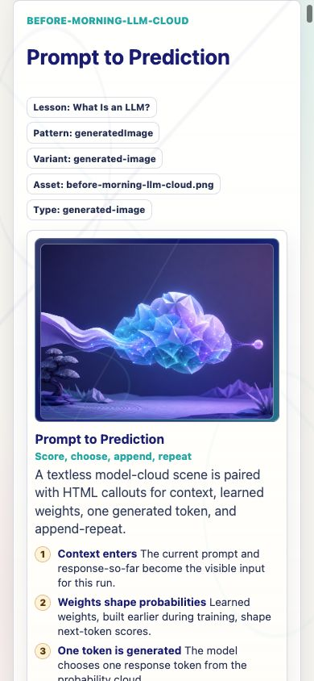
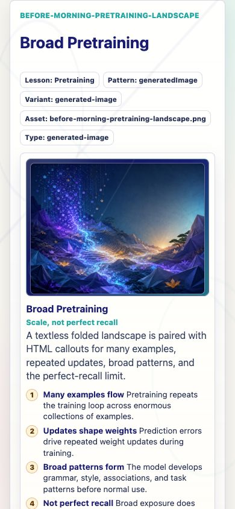
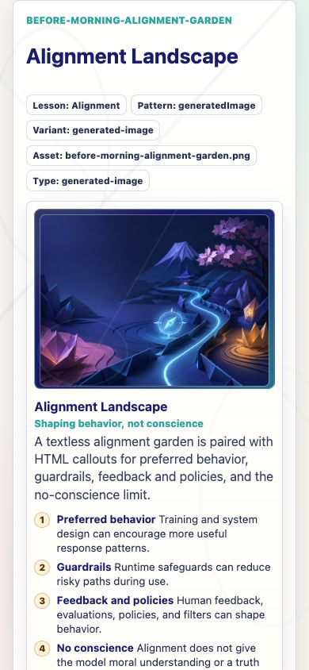

Prompt Life v0.17.4
Visual Loading + Key Terms Collapse Report
Date: June 5, 2026
This report wraps the v0.17.4 implementation summary and screenshots for the generated-asset loading fix and the two-row Key terms chip collapse.
What Changed
- Bumped the visible app version to
v0.17.4. - Added a base-aware public asset helper so generated PNG paths work in local dev and GitHub Pages builds under
/promptlife/. - Updated the generated visual-asset registry to use that helper for the four existing Before Morning PNGs.
- Added a reusable
KeyTermsChipslesson panel after the visual aid. It defaults to two rows, withShow all termsandShow fewer. - Prioritized the
Where LLMs Fitchip order so the most important topology terms appear before overflow. - Kept
Where LLMs Fiton the coded SVG/HTMLai-family-treevisual. No generated PNG was added for it. - Compacted the lesson-stage timeline under 340px so the first visual aid appears sooner on the narrowest phone check.
- Updated review notes, screenshot index, and the v0.17.4 stage audit note.
Files Changed
src/utils/assetPath.tssrc/data/visualAssets.tssrc/components/VisualAids.tsxsrc/main.tsxsrc/styles/global.cssdocs/REVIEW_NOTES.mddocs/stage-audits/v0-17-before-morning/GENERATED_ASSET_LOADING_FIX_V0_17_4.mddocs/stage-audits/v0-17-before-morning/screenshot-index.mddocs/stage-audits/v0-17-before-morning/screenshots/v0.17.4 screenshotsdocs/stage-audits/v0-17-before-morning/prompt-life-v0-17-4-visual-loading-key-terms-report.htmldocs/stage-audits/v0-17-before-morning/prompt-life-v0-17-4-visual-loading-key-terms-report.pdf
Asset Path Fix
publicAssetPath(path) now derives public asset URLs from import.meta.env.BASE_URL. That means the same registry produces the right URL shape for each build target:
| Target | Example generated PNG path |
|---|---|
| Local dev | /assets/generated/before-morning/before-morning-llm-cloud.png |
| GitHub Pages build | /promptlife/assets/generated/before-morning/before-morning-llm-cloud.png |
The generated-image fallback now reads: Visual asset unavailable. The callouts below still explain the concept.
Generated Image Load Status
/promptlife/.Chip Collapse Behavior
- Glossary chips now render through a semantic
Key termssection after the visual aid. - Collapsed mode clips the list after two rows with a soft fade.
- The toggle is a real button with
aria-expandedandaria-controls. - Expansion is local UI state only; it does not touch lesson progress, badge progress, or checkpoint state.
- At 320px and 390px,
Where LLMs Fitnow shows the coded visual before the Key terms panel, then keeps the chips tidy below it.
Where LLMs Fit Visual Status
Where LLMs Fit still uses the coded SVG/HTML AI family tree. It has no generated image element and no generated PNG asset. The branch interaction and callouts appear before the Key terms panel so the visual is no longer buried by glossary chips.
Verification
npm run typecheck: passed.npm run build: passed with the existing Vite large-chunk warning.npm run build:pages: passed with the existing Vite large-chunk warning.npm run audit:answers: passed; 68 audited surfaces, 46 randomized, 22 fixed-order exclusions.- Browser QA: passed for generated images, Key terms collapse/expand, coded AI family tree, visual gallery, 320px/390px/430px mobile sweeps, local dev, and mounted Pages-style preview.
Known Issues
- The existing Vite large-chunk warning remains.
- The mounted Pages-style check proves local build paths; the deployed GitHub Pages CDN and iPhone cache still need a fresh-device check after push/deploy.
- During repeated local dev reload automation, Vite logged one React
createRootHMR message. No generated asset 404s appeared, and the mounted Pages build had no console errors.
Next Three Recommended Steps
- Add a lightweight Pages-build asset-path check that fails if generated PNGs resolve to root
/assets/...in a GitHub Pages build. - Add a narrow visual-regression capture for
Where LLMs Fitcollapsed and expanded terms at 320px and 390px. - After deployment, test the iPhone URL with
?v=0174or clear site data to avoid stale cached bundles.
Run Locally
From the repository root:
npm installnpm run dev -- --host 0.0.0.0- Open the local or network URL printed by Vite. For phone testing on the same Wi-Fi, use the network URL.
For a Pages-style local build smoke test, run npm run build:pages and serve dist under a /promptlife/ mount.



